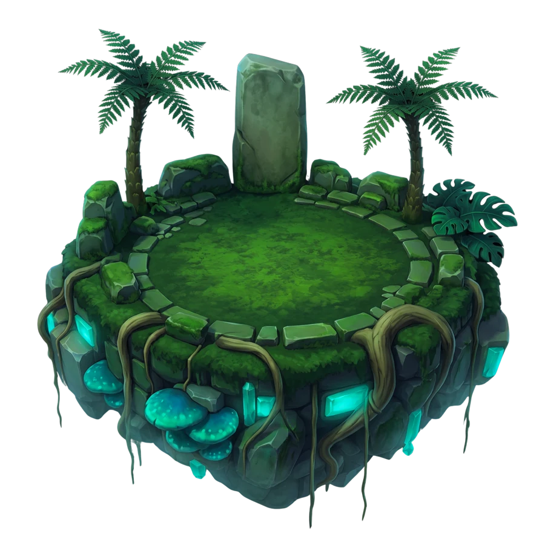
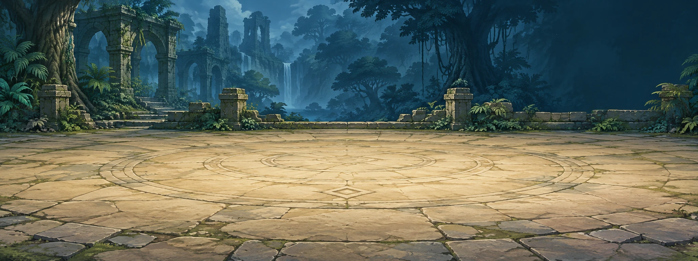
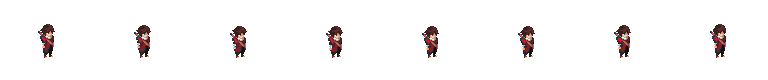
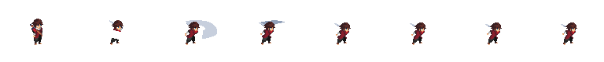
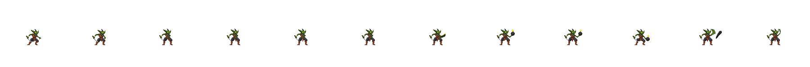
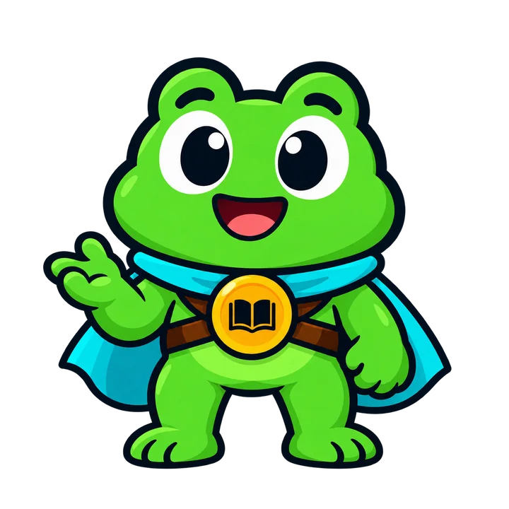
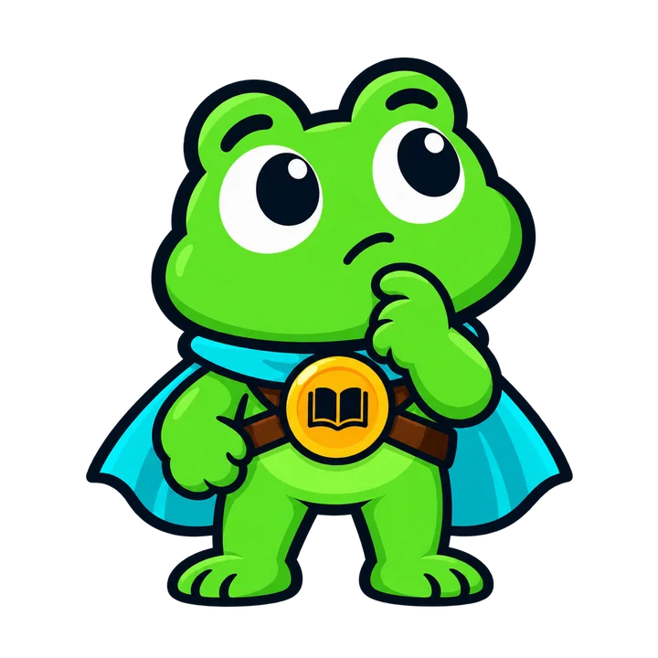
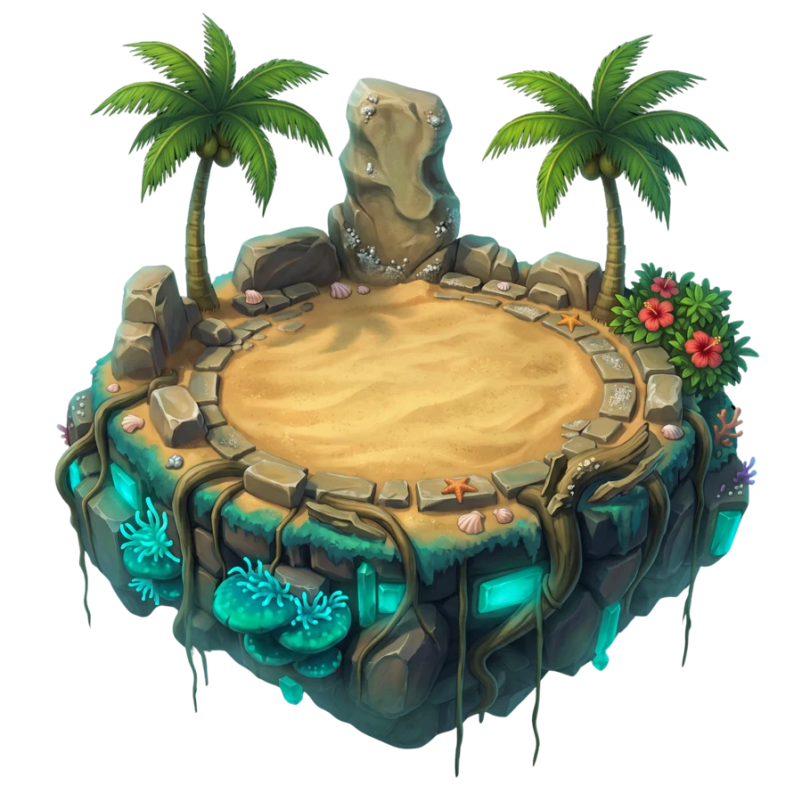

¿Otra tarea?
Otraaventura.
Una pregunta abre todo un mundo.



BIENVENIDO A TIUK
01 / APRENDER HACIENDO
TU CONOCIMIENTO ES TU ATAQUE
Responde.Ataca.Aprende.
Aprender «Tingki» también gana una batalla.
BATALLAS RPG + PREGUNTAS
REINO MISKITO♥ ♥ ♥ ✦ 0 XP

BESTIA DEL VALLE · HP 5/5



+50 XP
¿Cómo dices «Gracias» en miskito?
Elige tu respuesta.Tingki significa «Gracias». ¡Buen ataque!
Comprobar →
Un acierto. Un ataque.Y una explicación para seguir aprendiendo.
02 / EL RETO COBRA VIDA
PROFE TUKI / CHAT + VOZ EN VIVO
La duda no terminala aventura.
Tutor TukiListo para ayudarte
CHAT CON IA
● TUKI LIVE00:12

¿Qué saludo significa «Buenos días» en inglés?
Piensa. Responde. Descubre.
03 / PREGUNTAR TAMBIÉN ES AVANZAR
PARA DOCENTES / AVENTURA PEDAGÓGICA
Un tema.Toda una misión.
Crear con IA
Tema o contenido a enseñar
Saludos y despedidas
Grado
4.º primaria
Idioma a aprender
Miskito
Ambientación
Una expedición entre islas.
✧ Generar aventura

Imaginando la aventura…
VISTA PREVIA / 3 BLOQUES
La puerta de los saludos
01 / NARRATIVASaluda con Naksa: «Hola / ¿Cómo estás?».
02 / PREGUNTA¿Qué significa «Yua yamni»?
03 / BATALLA RPGDesbloquea el camino con los saludos del corpus.
04 / LA IA PROPONE. TU CRITERIO ENSEÑA.
LA SIGUIENTE MISIÓN ES TUYA
De «no entiendo»a «otro nivel».
Una misión más.


RESPONDE. ATACA. APRENDE.
TIUK / UN MUNDO POR ENTENDER